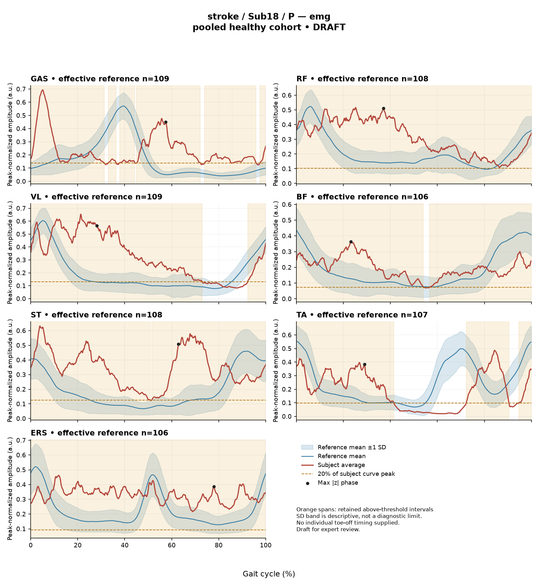

RB989C02800D1EBAB
rater3 / 2 of 150 / Case stroke_Sub18_P / Review row 3
Report: verbatim text
Text file for exact quotations# Gait Report Interpretation — Sub18_P **Interpretation version:** limited-evidence-v3.1-candidate **Scope:** Research-level description of supplied summary metrics only. Not a diagnosis, not a treatment recommendation. --- ## 1. Objective Findings **Participant and side.** Sub18_P is a member of the stroke cohort, and the data supplied are for the **paretic** side. The released cycle for this limb runs from one initial contact of that limb (0%) to the next initial contact (100%); these are two successive occurrences of the same event, not a single instant. No intermediate event — including toe-off — and no phase boundary is supplied, so all timing below is expressed strictly as a percentage of the analysis cycle. **Spatiotemporal measures.** - Gait speed **0.34 m/s**, which falls in the household-ambulator speed band (<0.4 m/s). This label denotes a speed band only; it does not measure walking independence, safety, or real-world community mobility. - Cadence **62.2 steps/min**. - Step length symmetry index **−3.9%** (successive-footfall definition: each heel's position at its own initial contact). By the stated sign convention, a negative value means the **paretic step is the shorter** of the two, here by a small margin. The alternative instantaneous definition can yield a different value for some subjects and was not the one used here. **Speed support limit — applies directly to this subject.** The healthy reference cohort's self-selected speeds span 0.80–1.79 m/s. At 0.34 m/s this participant walks well below that floor, so **no speed-matched healthy reference exists in this dataset**. Every comparison in Sections 2 and 3 therefore conflates the effects of very slow walking with any stroke-related control changes, and these two contributions cannot be separated from the data supplied. The reference used is also pooled across both body sides and all ages and is not age-matched to this subject. Deviations described below are differences from that empirical reference — they do not by themselves establish a disease effect, a clinical diagnosis, or a severity grade. **Channels available and not available.** Seven EMG envelopes (GAS, RF, VL, BF, ST, TA, ERS) and four sagittal kinematic channels (ankle, knee, hip, pelvis) are supplied for the paretic side. Not supplied in this input: individual toe-off and other gait events, matched muscle-specific normal timing references, stride-level (stride-to-stride) data, raw-signal quality checks, expert plots, coronal and transverse plane kinematics, non-paretic-side EMG or kinematics, age, sex, time post-stroke, and stroke clinical scores. Some of these fields (e.g. age, sex, gait events, clinical scores) may exist elsewhere in the release; they are simply outside this input and must not be described as absent from the source dataset. --- ## 2. EMG Envelope and Threshold Findings **How these numbers were produced.** The curves are ensemble-averaged envelopes. For each participant, side, and muscle, a shared maximum across the available strides was used before averaging; individual strides were not rescaled to their own peaks. In the checked stroke release the denominator is participant-, side-, and muscle-specific and is **not** shared between sides, so amplitudes are not comparable across muscles or across limbs. A local array audit found 614 evaluable combinations of the 700 possible, with 86 lacking valid nonzero paired samples; this is dataset-level context and does not, by itself, characterize this subject's channels. **Peak normalized amplitudes below are relative envelope values — not neural drive, force, or strength — and muscles must not be ranked as stronger or weaker from them.** An averaged curve also cannot show stride-to-stride variability. **How to read the intervals.** "Above-threshold interval" means the region where the *averaged* envelope exceeds 20% of that same curve's own peak, with a minimum retained length of 3% of the cycle. An interval written X%–Y% with X > Y wraps the 100%→0% boundary, i.e. the mean envelope remains above threshold across the cycle-defining initial-contact event. These are properties of the averaged envelope under this threshold-and-duration rule — they are **not** physiological onsets, offsets, contraction durations, or evidence of inactivity outside the listed intervals, and they cannot be assumed to hold in every individual stride. Without toe-off or matched timing references, no interval can be assigned to a gait phase or to a functional role such as clearance, push-off, or weight acceptance, and no timing can be called normal, early, delayed, or prolonged. | Muscle | Retained interval(s) | Coverage | Boundary | Peak norm. amp. | Max \|z\| (location) | |---|---|---|---|---|---| | GAS | 33–36; 38–44; 45–72; 74–85; 86–96; 98–31 (wraps) | 93% | above threshold across boundary | 0.69 | 16.8 above ref., at 57% | | RF | 0–100 | 100% | above threshold across boundary | 0.52 | 5.1 above ref., at 37% | | VL | 92–73 (wraps) | 81% | above threshold across boundary | 0.65 | 6.5 above ref., at 28% | | BF | 57–54 (wraps) | 98% | above threshold across boundary | 0.36 | 2.4 above ref., at 23% | | ST | 52–51 (wraps) | 100% | above threshold across boundary | 0.63 | 6.1 above ref., at 63% | | TA | 72–90; 95–42 (wraps) | 65% | above threshold across boundary | 0.49 | 4.2 above ref., at 29% | | ERS | 0–100 | 100% | above threshold across boundary | 0.46 | 4.2 above ref., at 78% | **Description.** All seven mean envelopes are reported as above threshold at the cycle boundary, and reported coverage is high in most channels (65% to 100%). For RF, ST and ERS the coverage is displayed as 100% and, for RF and ERS, the interval is written as the full analysis window 0%–100%; note that an onset of 0% is the analysis-window boundary, not a physiological onset. These rounded, full-coverage values describe the retained intervals at the displayed precision — they do **not** by themselves establish that no below-threshold sample exists anywhere in the curve, and near-boundary rounded numbers cannot be used to classify the hidden unrounded values. GAS is reported with multiple retained segments separated by short gaps and 93% coverage; TA shows the lowest coverage of the set at 65% across two retained segments. Because the threshold is relative to each curve's own peak, low coverage in one muscle and high coverage in another cannot be compared as amounts of activity. **Max |z| values.** The max |z| statistic is the largest absolute standardized difference from the phase-specific reference mean across all 1001 phase points. It is an extreme-value statistic across the whole curve, not a single-observation z-score, and its location marks the **largest standardized difference**, not necessarily the time of peak envelope amplitude and not a gait event. "Above reference" means above the phase-specific reference mean at that phase point, not above a healthy percentile limit. The conventional 2-SD rule does not apply: in this dataset all 109 healthy controls exceed |z| = 2 on at least one muscle, and per-muscle healthy 95th percentiles for this statistic run from 3.65 (ERS) to 4.61 (TA), higher still under leave-one-out. Against that framing: BF (2.4) sits below the lowest of the stated per-muscle 95th percentiles. TA (4.2) is below its own stated 95th percentile of 4.61. ERS (4.2) exceeds its own stated 95th percentile of 3.65. RF (5.1), ST (6.1), VL (6.5) and GAS (16.8) exceed 4.61 and therefore exceed their respective per-muscle 95th percentiles, whatever the exact per-muscle value; the GAS value is far above the upper end of that stated span. These are large standardized differences from a pooled, unmatched, non-speed-matched reference and, given the speed limit above, cannot be attributed to stroke pathology as opposed to very slow walking, nor to any particular waveform feature. **Co-contraction indices.** CCI here is the Falconer–Winter index computed over the **full continuous envelopes** of the whole cycle (2 × common area / summed areas). It is a whole-cycle overlap index of normalized envelopes: it is not simultaneous activation time, not muscular force, and not a phase-specific result, and it can be non-zero even when the detected burst intervals do not overlap because sub-threshold activity contributes. Its value depends on the normalization and envelope methods used here, so values and thresholds from other studies or algorithms do not transfer. - **TA vs GAS = 0.60**, compared with this dataset's healthy median 0.39 (2.5th–97.5th pct 0.24–0.59). This value lies just outside — immediately above — the upper endpoint of that empirical interval. - **RF vs BF = 0.74**, compared with healthy median 0.68 (0.48–0.83). This value lies inside the interval, above the median and not close to either endpoint. Being inside the interval does not establish physiologically normal co-activation or normal muscle function; being just outside it does not establish pathological co-activation, spasticity, stiffness, impaired motor control, or any diagnosis. The same non-matched-reference and slow-speed limits apply to both indices. --- ## 3. Kinematic and Reference Comparisons All joint data supplied are **sagittal plane only**; coronal and transverse channels are not included in this input, so no statement about those planes is possible. | Channel | Sagittal ROM | Gait Variable Score | |---|---|---| | Ankle | 17.9° | 12.53 | | Knee | 49.5° | 19.10 | | Hip | 41.3° | 12.02 | | Pelvis | 6.8° | 7.14 | **Composite (GPS-like) = 13.39.** This is the RMS of the per-joint GVS values over the four supplied sagittal channels — it is *not* the validated 9-variable GPS and should not be reported as such. The deviation reference actually used for this subject is **138 pooled healthy subjects**, 1001 phase points, from main_cohort_excel. Against the supplied composite reference (median 5.1, 95th percentile 10.7), this subject's 13.39 is above both the median and the 95th percentile. Among the individual channels, the knee GVS (19.10) is the largest and the pelvis GVS (7.14) the smallest. **Interpretive limits.** GVS and the GPS-like composite are summary magnitudes of difference from the stated reference across the cycle. Neither localizes the deviation to a direction (e.g. more flexion vs more extension), to a phase, or to a specific waveform feature — an elevated score says only that the curve differs from the reference mean overall. The reference percentiles here are **pooled calibration percentiles**, not matched leave-one-out normal limits, and the cohort is not age- or speed-matched; at 0.34 m/s no speed-matched comparison is available at all. Consequently these elevated scores describe distance from an empirical reference and cannot establish a disease effect, a clinical diagnosis, or a severity grade. ROM values are reported as measured sagittal excursions. ROM alone, without an appropriate matched comparison, does not establish a clinical restriction or an excess at any joint, and none is asserted here. No statement is made about whether the composite score arises predominantly from the knee, because the composite is an RMS summary and the per-joint scores are themselves non-localizing. --- ## 4. Questions for Further Clinical Assessment These are open questions raised by the limits of this summary. None presupposes that the mechanism or measurement issue in question has been observed, and none implies a treatment. 1. **Speed-matched comparison.** Given that 0.34 m/s lies far below the reference cohort's 0.80 m/s floor, is a slow-walking healthy or clinical comparison set available elsewhere that could help distinguish speed-related from other contributions to the EMG and kinematic deviations? 2. **Event timing.** Can individual toe-off and other gait-event timings for this limb be retrieved from the release? Without them, no interval or max |z| location in this report can be placed within a gait phase or evaluated against matched muscle-specific normal timing. 3. **Envelope composition.** For the channels with very high reported coverage (RF, ST, ERS at 100%; BF at 98%; GAS at 93%), can the underlying unrounded envelopes and the relationship of each curve to its own 20% threshold be inspected, to characterize how close the below-threshold portions are to the criterion? 4. **Signal quality.** Are raw-signal quality checks, electrode placement records, and any documented artifact or crosstalk assessments available for these seven channels — particularly GAS, whose max |z| of 16.8 is far above the stated per-muscle 95th-percentile span? This is a question about whether such a factor is present, not a claim that it has been identified. 5. **Stride-level behaviour.** Are the individual stride envelopes retrievable, so that the stride-to-stride consistency of the patterns summarized here can be examined? The averaged curves supplied cannot address this. 6. **Contralateral and multiplanar data.** Are non-paretic-side EMG and kinematics, and coronal/transverse joint data, available for this participant? Note that the EMG normalization denominator is side-specific, so any between-side amplitude comparison would need explicit handling of that. 7. **Participant context.** Are age, sex, time post-stroke and stroke clinical scores available in the release for this subject, to frame the reference comparison more appropriately? 8. **Step-length definition.** Would the symmetry index computed under the instantaneous definition differ materially from the −3.9% reported here under the successive-footfall definition?
Coverage rows
| Excel row | ID | Required content | Components |
|---|---|---|---|
| 7 | R043 | Describe walking speed 0.34 m/s and that it is below the stated 0.80 m/s reference floor; no reference at this speed is supplied. | AND: displayed speed and that it lies below the 0.80 m/s reference floor, so no speed-supported healthy reference exists in this dataset. Optional: cadence, speed-band label (not a functional claim). One sentence may also serve the comparability half of G03. |
| 8 | R044 | Identify the knee as the leading GVS difference AND describe a further difference using ankle OR hip. Exact GVS values are optional; identify the findings as reference-relative sagittal summary differences. | AND: knee as leading AND (ankle OR hip). Stating which joint is larger is optional; asserting the reverse order is an error. Exact GVS values are optional; no waveform direction, phase or restriction is required. |
| 9 | R045 | Describe GAS envelope above its phase-specific reference mean at approximately 57% of the analysis cycle (displayed max |z| 16.8). Within each route, muscle identity AND mean-relative direction AND approximate cycle location are required. Exact max-|z| repetition is optional. | Required for each route: muscle identity AND direction relative to the phase-specific reference mean AND approximate cycle location. Optional: exact max |z| value, comparison with the supplied endpoint span (descriptive only). Prohibited: percentile classification, gait phase, physiological onset, severity. |
| 10 | R046 | Describe EITHER VL envelope above its phase-specific reference mean at approximately 28% of the analysis cycle (displayed max |z| 6.5) OR ST envelope above its phase-specific reference mean at approximately 63% of the analysis cycle (displayed max |z| 6.1). One complete muscle-specific route is sufficient. Within each route, muscle identity AND mean-relative direction AND approximate cycle location are required. Exact max-|z| repetition is optional. | OR: one complete route suffices. Required for each route: muscle identity AND direction relative to the phase-specific reference mean AND approximate cycle location. Optional: exact max |z| value, comparison with the supplied endpoint span (descriptive only). Prohibited: percentile classification, gait phase, physiological onset, severity. |
| 11 | R048 | Describe the supplied successive-footfall step-length index -3.9% and its meaning: the paretic step is shorter. | AND: displayed index and the direction supported by its sign. Optional: formula, definition wording. Acceptable phrasing for small displayed values: "a small difference with the paretic step slightly shorter/longer" (not a cutoff). Prohibited: restating the index as a percentage shortening (E01), severity grades, whole-gait symmetry generalization (E07 issue, not an omission). |
| 12 | G03 | Express a meaningful limitation of reference comparability AND why the comparison cannot establish disease effects or clinical diagnosis; for controls it cannot establish disease or overall normality. One statement may also support a case requirement. | AND: comparability and inference limitations |
Exact system input
Saved fileDraft a research gait-report interpretation for a physical therapist or physiatrist using only the supplied quantitative summary. This is a limited-evidence interpretation task, not diagnosis or treatment selection. Rules: - Describe the participant's actual group and side, available findings, and missing channels accurately. Healthy-group membership does not prove normal physiology; deviations from an empirical reference do not by themselves establish disease. - Treat detected EMG intervals and coverage as properties of an averaged envelope under the stated threshold and duration rule. Do not convert them into physiological onset, offset, duration, continuous contraction, or inactivity outside the intervals. You may describe reported coverage, retained intervals and boundary continuity at the mean-envelope level. Do not infer the same pattern in every individual stride. Say no below-threshold segment only when the supplied evidence establishes that; a rounded coverage value or no retained interval alone does not establish it. - Individual toe-off and matched muscle-specific timing references are not supplied in this task. Use percentages of the analysis cycle. When the input explicitly identifies an initial-contact boundary, you may name that boundary or describe numerical proximity to it. Do not assign stance/swing, loading response, pre-swing, mid-stance or another event to a percentage, or substitute a conventional 60% split. Anatomical muscle actions may be named, but do not map an interval to a gait-phase function such as clearance, push-off or weight acceptance. Do not characterize timing as normal, early, delayed or prolonged without the required evidence. - Respect the supplied normalization method. Relative envelope amplitude is not strength or force, and average curves do not establish stride-to-stride variability. - Report CCI as a whole-cycle overlap index of normalized EMG envelopes. You may compare it with the supplied empirical interval or a supplied median, including proximity to an endpoint. Do not invent an unavailable median. Being within that interval does not establish physiologically normal co-activation or normal muscle function; being outside it does not establish pathological co-activation, stiffness, impaired control or a diagnosis. CCI is not simultaneous activation time, muscular force or a phase-specific result. It depends on normalization and envelope methods; do not transfer values or thresholds from other studies or algorithms. - Describe GVS and GPS-like as summary differences from the stated reference. Neither localizes waveform direction or phase; ROM alone does not establish a clinical restriction without an appropriate comparison. Do not treat pooled calibration percentiles as matched leave-one-out normal limits. - Where using a reference comparison, convey both limited comparability and the inability to establish a disease effect or clinical diagnosis from that comparison. One clear explanation per report is enough; age and speed need not be recited as separate checklist words. A speed inside an overall range does not prove that an appropriate matched reference exists. Apply these limits to controls as well. - The location of maximum |z| is the largest standardized difference from the reference, not necessarily the time of peak envelope amplitude or a gait event. Above/below reference in an EMG row means relative to the phase-specific reference mean at that location, not relative to a healthy percentile limit. - Preserve numerical direction and the displayed precision. Do not invent values, clinical severity grades, statistical significance, or unavailable reference values. Descriptive comparisons with supplied values remain allowed. Near-boundary rounded values do not justify classifying hidden unrounded values. - Clinical follow-up questions may ask whether a mechanism or measurement issue exists; do not presuppose it has already been observed. Do not recommend treatment. If EMG is unavailable, section 2 may simply state that envelope timing, amplitude and CCI cannot be assessed. Reference-only plots do not provide patient EMG. Use exactly these four sections: 1. Objective Findings 2. EMG Envelope and Threshold Findings 3. Kinematic and Reference Comparisons 4. Questions for Further Clinical Assessment
Exact case input
Saved fileCandidate interpretation version: limited-evidence-v3.1-candidate
Draft the four-section report using only this subject's supplied evidence.
Metric definitions (read before interpreting any number below):
- All joint angles and ROM values are SAGITTAL PLANE only. Coronal/transverse data are not included.
- The released EMG curves are ensemble-averaged envelopes. For each participant and recorded muscle, normalization uses a shared maximum across the available strides before averaging; individual strides are not independently rescaled to their own peaks. This pipeline uses the released mean curves without further amplitude normalization. In the checked stroke release, the denominator is participant-, side-, and muscle-specific; it is not shared between sides. The local array audit verified 614 evaluable combinations, not all 700; 86 lacked valid nonzero paired samples. Amplitudes are relative envelope values, not absolute neural activation, force, or strength. Do not rank muscles as stronger or weaker from these amplitudes, or infer stride-to-stride variability from an average curve.
- Above-threshold intervals are the regions where the averaged envelope exceeds 20% of that curve's own peak, minimum retained interval 3% of the cycle (by sample count). An interval written as (X%-Y%) with X > Y wraps across the 100%->0% cycle boundary (envelope remains above threshold across the cycle-defining event). An onset of 0% is the analysis-window boundary, not necessarily a physiological onset. "No interval detected" means no region met the threshold + duration criteria; it does NOT mean the muscle is inactive or non-functional.
- CCI is the Falconer-Winter co-contraction index computed on the full continuous envelopes (2*common area / summed areas), so it can be non-zero even when the DETECTED burst intervals of the pair do not overlap (sub-threshold activity contributes).
- The composite kinematic deviation score is the RMS of the per-joint Gait Variable Scores over the sagittal channels provided ("GPS-like", not the validated 9-variable GPS).
- Step length symmetry index: 200*(paretic - non-paretic)/(paretic + non-paretic), in %. NEGATIVE means the paretic-side step is SHORTER. Two operational step-length definitions exist (successive-footfall: each heel's position at its own initial contact; instantaneous: both heels at the same instant) and give different values for some subjects -- the definition actually used is stated next to the symmetry value.
- "Max |z| deviation" is the LARGEST absolute z-score across all 1001 phase points of the cycle, comparing this curve to the healthy-cohort mean/SD at each phase. This is an extreme-value statistic, NOT a single-observation z-score: in this dataset every one of 109 healthy controls exceeds |z| = 2 on at least one muscle, and per-muscle healthy 95th percentiles for this statistic run 3.65 (ERS) to 4.61 (TA) -- higher still under leave-one-out. Do not label a value abnormal by the conventional 2-SD rule; use the healthy reference range given per muscle where provided.
- Healthy-cohort CCI reference (this dataset): RF-vs-BF median 0.68 (2.5th-97.5th pct 0.48-0.83); TA-vs-GAS median 0.39 (0.24-0.59). Composite score reference: median 5.1, 95th percentile 10.7.
- COHORT BACKGROUND (calibration context, not necessarily the exact reference used for this subject -- the actual reference composition is stated in a dedicated line with the subject data below): the full healthy cohort is 138 subjects for kinematics, effective n = 106-109 per muscle for EMG (29 controls have no usable EMG; completeness varies by age), pooling both body sides and all ages; it is not age- or speed-matched to this subject. A leave-one-out run uses one subject fewer than these counts.
- SPEED SUPPORT LIMIT (applies to most stroke subjects in this dataset): the healthy reference cohort's self-selected walking speeds span 0.80-1.79 m/s. If this subject's gait speed is below 0.80 m/s, NO speed-matched healthy reference exists in this dataset -- 41 of the 50 stroke subjects are below that floor. Deviations from the reference then conflate slow-walking effects with stroke-specific control changes, and the two cannot be separated from these data. Describe deviations from the reference as such; do not attribute them wholly to stroke pathology.
- Additional source fields are outside this input. Age, sex and gait events may be available in the release; time post-stroke, stroke clinical scores and a non-paretic-side designation apply only to the stroke cohort, as applicable. Do not claim every listed field exists for every participant. Distinguish not supplied, not applicable and documented absent recordings.
The released paretic-side cycle runs from initial contact of that limb at 0% to its next initial contact at 100%. The cycle boundary may be called initial contact; the endpoints are successive occurrences, not one instant. No intermediate event or phase boundary is supplied.
Model-visible information boundary: the summary contains mean-curve metrics and algorithm-detected intervals, not individual toe-off, matched normal muscle timing, stride-level variability, raw-signal quality checks, or expert plots. Information not supplied here must not be described as absent from the source dataset. Gait-cycle percentages alone do not identify gait phases.
Subject: Sub18_P (group: stroke, affected side: paretic)
Gait speed: 0.34 m/s (household ambulator (<0.4 m/s)) [The ambulation label denotes a speed band only, not measured walking independence, safety or real-world community mobility.]
Cadence: 62.2 steps/min
Step length symmetry index: -3.9% (step-length definition: successive_footfall)
Composite kinematic deviation score (GPS-like): 13.39
Deviation reference actually used for this subject: 138 healthy subjects (pooled), 1001 phase points, source: main_cohort_excel.
EMG envelope findings:
- GAS: above-threshold interval(s) 33%-36%; 38%-44%; 45%-72%; 74%-85%; 86%-96%; 98%-31% (wraps cycle boundary), 93% of cycle above threshold, above threshold across cycle boundary, peak normalized amplitude 0.69, max |z| vs healthy reference: 16.8 (above reference, at 57% of cycle)
- RF: above-threshold interval(s) 0%-100%, 100% of cycle above threshold, above threshold across cycle boundary, peak normalized amplitude 0.52, max |z| vs healthy reference: 5.1 (above reference, at 37% of cycle)
- VL: above-threshold interval(s) 92%-73% (wraps cycle boundary), 81% of cycle above threshold, above threshold across cycle boundary, peak normalized amplitude 0.65, max |z| vs healthy reference: 6.5 (above reference, at 28% of cycle)
- BF: above-threshold interval(s) 57%-54% (wraps cycle boundary), 98% of cycle above threshold, above threshold across cycle boundary, peak normalized amplitude 0.36, max |z| vs healthy reference: 2.4 (above reference, at 23% of cycle)
- ST: above-threshold interval(s) 52%-51% (wraps cycle boundary), 100% of cycle above threshold, above threshold across cycle boundary, peak normalized amplitude 0.63, max |z| vs healthy reference: 6.1 (above reference, at 63% of cycle)
- TA: above-threshold interval(s) 72%-90%; 95%-42% (wraps cycle boundary), 65% of cycle above threshold, above threshold across cycle boundary, peak normalized amplitude 0.49, max |z| vs healthy reference: 4.2 (above reference, at 29% of cycle)
- ERS: above-threshold interval(s) 0%-100%, 100% of cycle above threshold, above threshold across cycle boundary, peak normalized amplitude 0.46, max |z| vs healthy reference: 4.2 (above reference, at 78% of cycle)
Co-contraction indices:
- TA_vs_GAS: CCI = 0.60
- RF_vs_BF: CCI = 0.74
Joint kinematic findings (sagittal plane):
- AnkleAngles: range of motion 17.9 deg, Gait Variable Score 12.53
- KneeAngles: range of motion 49.5 deg, Gait Variable Score 19.10
- HipAngles: range of motion 41.3 deg, Gait Variable Score 12.02
- PelvisAngles: range of motion 6.8 deg, Gait Variable Score 7.14Reference card
Saved file# Reference context: stroke/Sub18_P Mean/SD reference: 138 controls; method pooled; exclusions: []. Effective reference counts: GAS=109, RF=108, VL=109, BF=106, ST=108, TA=107, ERS=106, AnkleAngles=138, KneeAngles=138, HipAngles=138, PelvisAngles=138. The exact system and user input files define what the model receives. The EMG and kinematic plots are supplementary expert evidence, not model inputs. The plotted mean plus/minus one SD is descriptive, not a clinical normal band. Negative lower EMG bands can result from mean minus SD; they do not imply negative recorded EMG. The max-|z| p95 span in the input is pooled calibration context. Complete muscle-specific LOO thresholds are not supplied; an appropriately indeterminate classification is allowed. Controls are excluded from their own mean/SD reference, but cohort-level calibration has prior reference-data reuse. It is not an independent matched clinical limit. GPS-like is a four-channel sagittal composite, not the validated nine-variable GPS. The pooled median/p95 background is not a matched LOO normality boundary. CCI uses continuous normalized envelopes over the whole analysis cycle. An empirical interval comparison does not establish normal muscle function. Threshold intervals and rounded coverage describe the averaged envelope. Rounded 100% coverage and one interval do not prove absence of short below-threshold gaps. Use the group-specific cycle and normalization provenance in the actual input. No individual intermediate gait events or matched normal muscle timing are supplied. Administrative age and published bilateral speed are not added to this input. Expert-visible plots do not justify requiring unseen direction, phase or morphology. For a new-case requirement, cite exact input evidence. Select clinically useful descriptive content without inferring a diagnosis or severity from rank alone.
Expert reference curves
Only text inputs were supplied to the model. Do not require curve-only findings.
EMG

Kinematics